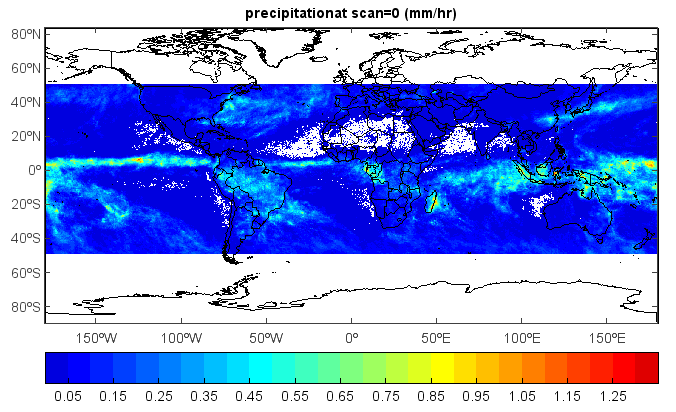

TRMM 3B43 data¶
This example code illustrates how to access and visualize a TRMM 3B43 data.
#Add data file
folder = 'D:/Temp/hdf/'
fns = '3B43.100301.6A.HDF'
fn = folder + fns
f = addfile(fn)
vname = 'precipitation'
t = f[vname]
rain = t[0,:,:]
rain = transpose(rain)
rain[rain==0] = -9999.0
rain.fill_value = -9999.0
lat = arange(-49.875, 49.875, 0.249375)
lon = arange(-179.875, 179.876, 0.25)
#Plot
axesm()
geoshow('country')
layer = imshow(lon, lat, rain, 20)
colorbar(layer, orientation='horizontal')
title(vname + 'at scan=0 (mm/hr)')
axism()
